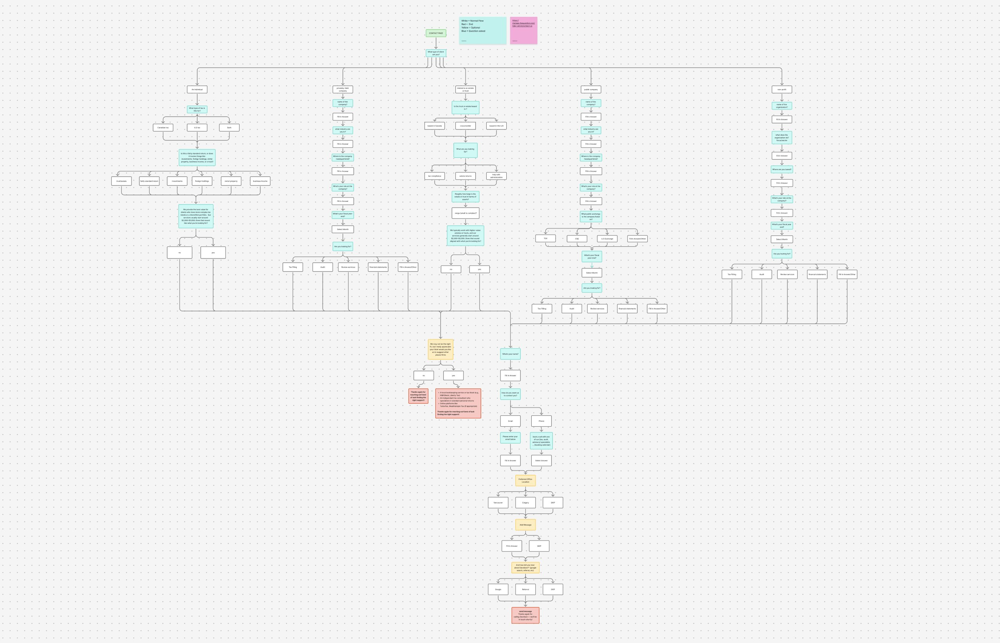
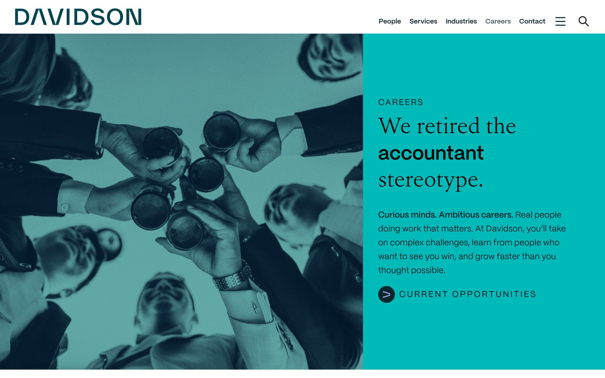
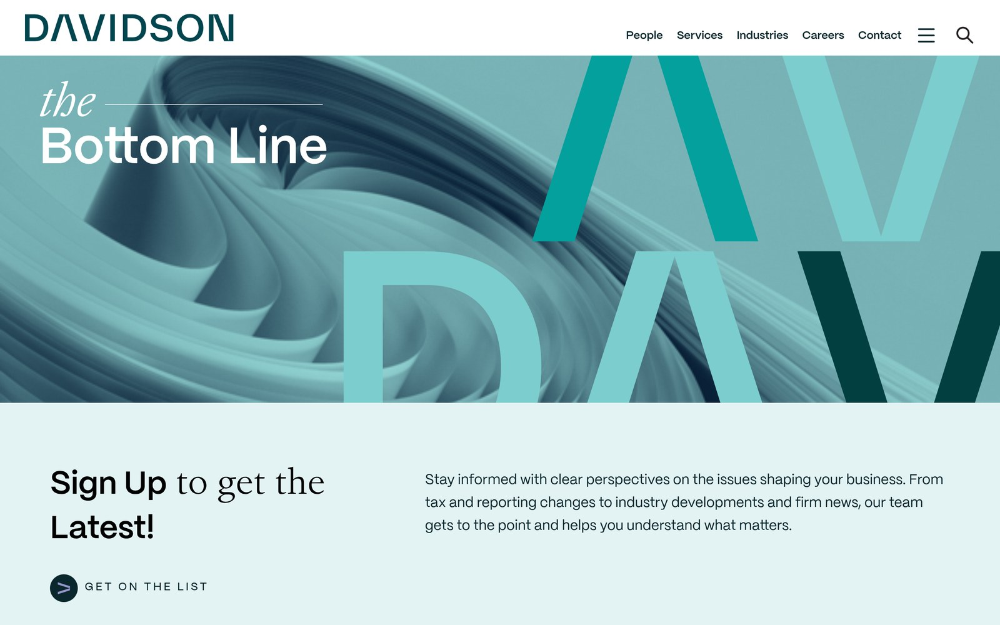
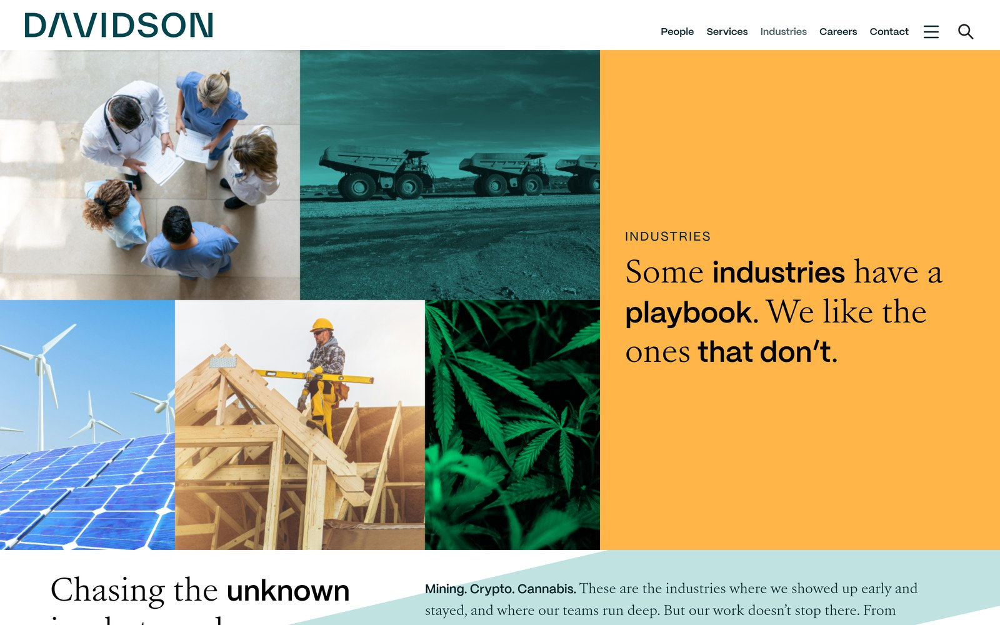
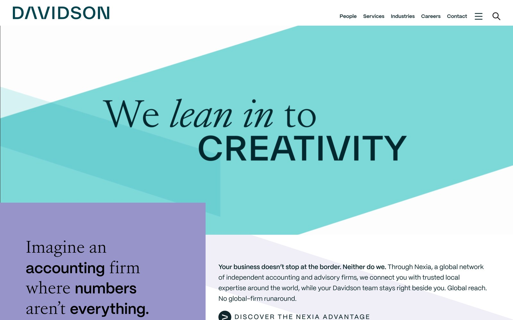
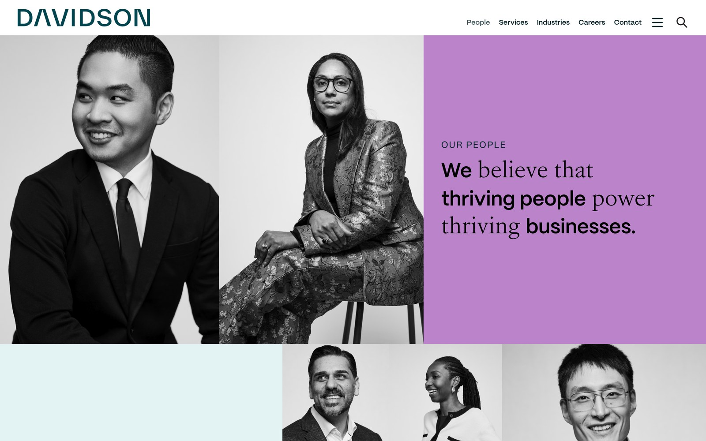
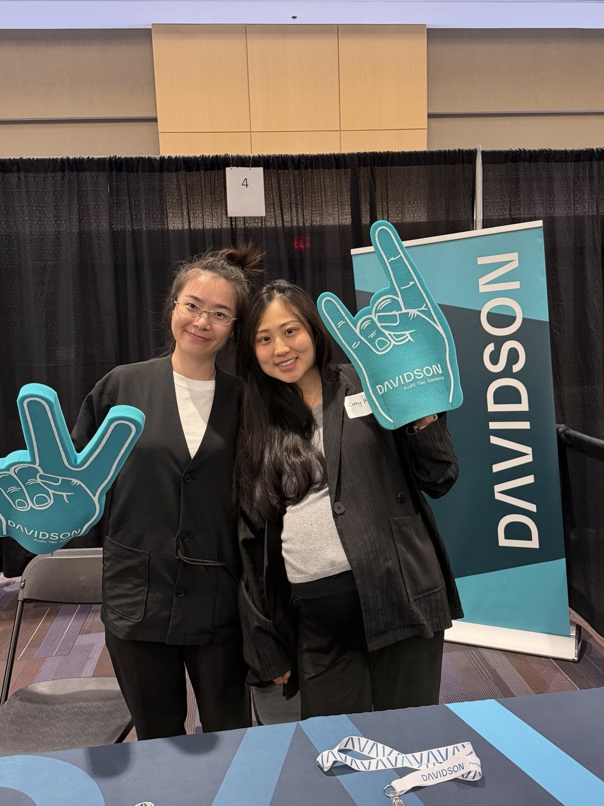

As a brand design intern at Davidson, I got to touch almost every part of how the firm shows up — the website, the social posts, the copy, the motion work. Of everything I worked on, the website redesign felt the most expansive, because the site is where all of it comes together. My goal was to bring greater clarity and consistency to it, and a distinct sense of Davidson’s personality to every page. It was about more than a fresh look; it was about giving the firm a site that finally feels like itself.
A bold new look
When this project kicked off, Davidson’s website made visitors work for answers. Services, people, and insights were hard to find, and the way to get in touch felt generic and unclear. For a firm that helps clients navigate complexity with confidence, that was the problem to solve.
The redesign was a chance to build one clear structure, from the homepage to services, industries, people, careers, and The Bottom Line. I helped lead the redesign from start to finish. I mapped the site structure, used Figma to plan how the design system applies to each page, and then built and refined those pages in WordPress.
Starting on paper
Before anything was built, the pages started as quick paper sketches — low-fidelity mockups to work out the structure before the design system took over.

The contact form, mapped out as a user flow before it was built.
The right person, in a few clicks
People come to a professional services site with a question in mind. Can this firm help me? Who would I work with? How do I reach them?
My goal was to help any visitor answer “Is this the right firm for me?” in a few clicks. That visitor could be a client looking for expertise, a candidate getting a feel for the culture, or a referral partner looking for the right contact.
Unmistakably Davidson
Most people don’t picture an accounting firm as a place for brand, creativity, and big ideas. Davidson is different, and the site needed to show it. It leads with storytelling, real people, and a confident voice instead of the usual corporate look.
That personality is built into the design system. Headlines pair two weights, and client categories are colour-coded. Every page type follows a set of modules, and each module has a clear purpose, defined content, and set specs. The result feels like one firm, not a collection of pages, and every new page starts from a proven structure.
The homepage opens with a full-width banner and moves straight into four colour-coded client categories. Visitors choose the one that fits them and go directly to relevant content, so every visit has a clear starting point.
The details that carry it

A clear next step
Every inquiry type gets its own three-step path and form.

Culture before the job board
Leads with “We retired the accountant stereotype,” then open roles.

Reading that leads on
One article layout, so one read leads to the next.

Checked on a phone
Checked on mobile after every layout change.

Chasing the unknown
Leads with Mining, Crypto, and Cannabis — the sectors Davidson knows best.

Leads with the brand
The homepage leads with personality before it asks you to pick a service.

Looking forward
The best design work keeps going after launch. It grows with the people who use it and the team that looks after it. That’s how I want to approach every project from here.
Davidson now has a foundation to build on. New pages start from a proven structure, and the next person in this role has a playbook to start from. The bigger story is just getting started: an accounting firm can be a place where brand, creativity, and big ideas belong.
More from Davidson
The website was the main project, but my work went further. I rebuilt how Davidson plans content with a new content calendar, and I wrote staff bios and site copy in the Davidson voice.

Content and social
Culture, designed

Motion

On campus